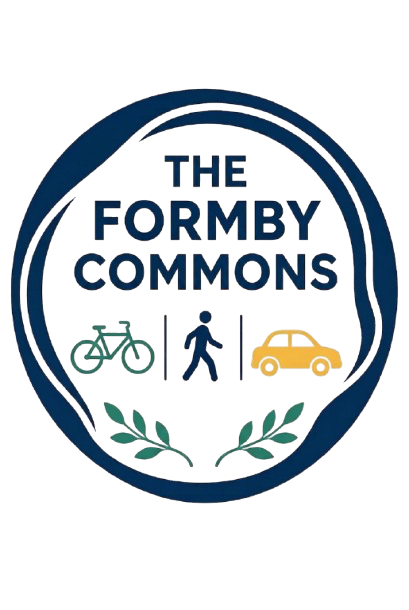

The Formby Commons
Making our public streets and spaces more inclusive, safe, and welcoming for everyone.
Who We Are
The Formby Commons is an informal, grassroots initiative started by local residents who share a common interest in the quality, safety, and accessibility of Formby's public environment.
We are not a formal political organization or a traditional membership club. Instead, we are a collective of neighbors, parents, commuters, and residents who believe that small, thoughtful changes to our streets and public spaces can make everyday life better for everyone.
Our Approach
Public spaces should work for people of all ages and abilities. Our discussions and activities are guided by three core ideas:
- Inclusivity First: Streets belong to the whole community. Whether walking to school, wheeling a pushchair, cycling to the train station, using a mobility scooter, or driving to work, everyone deserves safe and pleasant access.
- Constructive & Local: We focus on practical solutions rather than confrontation. We aim to gather good local evidence, listen to resident experiences, and present positive ideas for local improvements.
- Open & Informal: Anyone living, working, or spending time in Formby is welcome to read our updates, share observations, or pop into occasional informal meetups.
Why "The Commons"?
Historically, "the commons" refers to resources and spaces shared by a whole community. Our streets, pavements, parks, and village center are our modern commons. When we care for these spaces collectively, Formby becomes a healthier, safer, and more connected place to live.